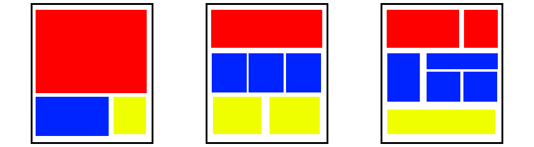

Advanced RWD
with Sass + Compass
Wifi: TBD
Pass: TBD
Meet the Trainers
Sam Richard
- Senior Front End Developer, NBCUniversal
- drupal.org/user/820332 (snugug)
- twitter.com/Snugug
- github.com/Snugug
Ian Carrico
- Backend of Frontend Developer, Four Kitchens
- drupal.org/user/1300542 (ChinggizKhan)
- twitter.com/iamcarrico
- github.com/ChinggizKhan
Chris Ruppel
- Frontend Developer, Four Kitchens
- drupal.org/user/411999 (rupl)
- twitter.com/rupl
- github.com/rupl
Agenda
- 9:00 - Personal intros and agenda
- 9:10 - Intro to Sass+Compass
- 9:50 - Gem and dependency management
- 10:15 - Coffee Break
- 10:30 - Media-queries: Breakpoint
- 11:45 - Lunch for 75 minutes
- 13:00 - Singularity and The Grid
- 14:30 - Advanced Singularity Grids
- 15:15 - Coffee Break
- 15:30 - Intro to Toolkit
- 16:45 - Wrap Up / Course Evaluations
Requirements
- FTP and/or SSH to edit remote files
- Write HTML and CSS by hand
- Install and use ruby gems
- Use git for version control
Training Wheels instances
You should have a paper handout. It contains:
- Unique sandbox URL
- user / pass
These training instances will be up for
30 days so you can keep experimenting!
The repo is open source and available on GitHub:
https://github.com/fourkitchens/advanced-rwd
How embarrassing!
We've got a typo. Could you fix it for us?
Open this file:
/index.html
Fix this typo:
<h2>Welcome to the <em>worst</em> training ever!</h2>
Sass + Compass

Sass
Sass is a language construct to create CSS
It makes writing awesome CSS easier
Syntax
Sass has TWO syntaxes:
.sass and .scss
.sass - whitespace sensitive
// .sass
.my-selector
font-size: 2em
background: #333
font-family: $monospace
// .scss
.my-selector {
font-size: 2em;
background: #333;
font-family: $monospace;
}
.scss - superset of CSS
Today we're using SCSS
Tech reasons
- Easier to understand if you know CSS
- Easier to integrate in the real-world
Team reasons
- Helps onboard CSS-savvy teammates.
- SCSS allows you to convert a project
piece by piece even in-progress
Switch to SassMeister
We'll be covering Sass basics using SassMeister.com
Variables
$blue: #00ff00;
$monospace: "Source Code Pro", "Courier New", monospace;
$default-fontsize: 1em;
$default-padding: 2 * $default-fontsize;
Sass lets you use variables to store values.
Functions
@function pixel-to-em($pixel, $font-size: 16px) {
@return $pixel / $font-size * 1em;
}
Functions return a single value, just like PHP or JS
Mixins
// Define
@mixin button-make($color: #66B360) {
background-color: $color;
border: 2px solid lighten($color, 20%);
}
// Call
.button-one {
@include button-make;
}
// Call with arguments
.button-two {
@include button-make($color-facebook);
}
Mixins are similar to functions, except they return blocks of CSS.
Extendables
// Sass
.message {
margin: 1em;
padding: 1em;
font-size: 1.2em;
}
.error {
@extend .message;
color: #060;
}
/* CSS */
.message, .error {
margin: 1em;
padding: 1em;
font-size: 1.2em;
}
.error {
color: #060;
}
Extendables allow you to build upon a common style.
Partials
sass
style.scsspartials
_variables.scss// style.css
@import 'partials/variables';Comments
/*
* This is a standard, multi-line comment
* that will appear in your final .css file
*
* Use multi-line comments to mark major headings or partials
*/
// Single-line comments will NOT appear in your final .css file
// Use single-line comments for developer notes
Generally, we leave a standard, multi-line comment on the top of each partial. This will help with debugging because we will always know what partial we are looking at.
Questions about Sass?
- Syntax options in Sass
- Variables
- Functions
- Mixins
- Extendables
- Partials
- Comments
Compass
Compass is a meta-framework for Sass
Provides useful mixins and functions
Includes plugin framework to allow
for community written extensions
Drupal vs Compass
| HTML | CSS |
| PHP | Sass |
| Drupal | Compass |
| Modules | Extensions |
Compass provides mixins and functions
ul {
@include pretty-bullets('bullet.png');
}
ul {
margin-left: 0;
}
ul li {
padding-left: 14px;
background: url('../img/bullet.png') no-repeat -12px -12px;
list-style-type: none;
}
In this case, the mixin allows the use of a "pretty" image for your bullets.
Compass features
- Vendor prefixing
- Sprite generation
- Typography and styling patterns
- Inlining of images and fonts
- And more…
Compass extensions
These are Ruby gems, just like Sass and Compass.
- Animation
- Sassy text-shadow
- Sassy Buttons, Sassy CSS3 buttons
- Breakpoint, simple MQs with Sass
- Singularity, Grids without Limits
- Aurora, Partial structure and Drupal sub theme
Toolkit bundles lots of this stuff together.
Questions about Compass?
- What does it provide?
- Core @mixins
- Community-built extensions
Bundler
Bundler: Unifying Gem Versions
When working on different computers, developers, or even projects, there will always be an issue with ruby gems changing between different versions.
We want to make sure that we know which versions of each gem we are using to prevent compiling differences and errors. Bundler allows us to do just that. But first, we need to make sure we have Bundler installed:
gem install bundlerBundler: Unifying Gem Versions
One time bundler setup:
mkdir ~/.bundle
echo 'BUNDLE_PATH: vendor/bundle' >> ~/.bundle/config
This will install all gems into your working directory, allowing you to have different gem versions.
Bundler: Unifying Gem Versions
The Gemfile that comes with the project will tell Bundler exactly what versions of what gems to use. Use the following command to create a Gemfile.lock file within your theme to install gem dependencies you may not already have and to lock each gem version.
bundle installYou should NEVER run "sudo bundle install"
Bundler: Unifying Gem Versions
From now on, instead of running "compass watch" or "compass compile", you can use:
bundle exec compass watchAnd bundler will only use the gem versions selected within the .lock file
Media Queries
Example media queries
// If the window is at least 500px wide...
@media (min-width: 500px) { ... }
// If the window is less than 785px wide...
@media (max-width: 785px) { ... }
// If the user is printing the page...
@media print { ... }
// If the window is in between 520px and 699px...
@media all and (min-width: 520px) and (max-width: 699px) { ... }
Breakpoint
Breakpoint is a Compass extension. It makes
media queries much easier to maintain.
$nav-lg: 680px;
.main-nav {
width: 100%;
@include breakpoint($nav-lg) {
width: 60%;
margin: 0 auto;
}
}
.main-nav {
width: 100%;
}
@media (min-width: 680px) {
.main-nav {
width: 60%;
margin: 0 auto;
}
}
Breakpoint Breakdown
Boil down most media queries to one simple value.
Assign that value a meaningful name.
You keep all the styles for a component in one place
Manage media queries by purpose and context.
CSS-only fallback system. No need for respond.js
Single value = min-width
Pass Breakpoint just a number and you get a min-width query.
// THIS IS OUR FIRST BREAKPOINT VARIABLE
$basic: 500px; // <-- YUP, THIS ONE
#main-nav {
width: 100%
@include breakpoint($basic) {
width: 75%;
}
}#main-nav {
width: 100%
}
@media (min-width: 500px) {
#main-nav {
width: 75%;
}
}Fenced Values
Two values creates a min-width / max-width query.
$big-header: 330px 750px;
#header {
font-size: 2em;
@include breakpoint($big-header) {
font-size: 2.5em;
}
}#header {
font-size: 2em;
}
@media (min-width: 330px) and (max-width: 750px) {
#header {
font-size: 2.5em;
}
}Explicit Test / Value
If one value is a string, assume a feature/value pair
$too-damn-wide: max-width 1000px;
#hero-image {
max-width: 100%;
margin: 2em 0;
@include breakpoint($too-damn-wide) {
margin: 0.5em 0;
}
}#hero-image {
max-width: 100%;
margin: 2em 0;
}
@media (max-width: 1000px) {
#fifty-seven-chevy {
margin: 0.5em 0;
}
}Combine Tests
String them together to create more complex queries
$tighten-text: (max-width 1000px) (orientation portrait);
#main-article {
font-size: 1em;
line-height: 1.375;
@include breakpoint($tighten-text) {
line-height: 1.25;
}
}#main-article {
font-size: 1em;
line-height: 1.375;
}
@media (max-width: 1000px) and (orientation: portrait) {
#pappas {
line-height: 1.25;
}
}No-query fallbacks
Breakpoint can also output fallbacks for when no media queries are present, such as in IE<9
$breakpoint-no-query-fallbacks: true;
$nav-lg: 500px, 'no-query' '.lte-ie8';
nav {
@include breakpoint($nav-lg) {
width: 60%;
margin-right: 4%;
}
}
@media (min-width: 500px) {
nav {
width: 60%;
margin-right: 4%;
}
}
.lte-ie8 nav {
width: 60%;
margin-right: 4%;
}
Just add a conditional class to your <html> element
Bronze challenge:
Create a media query that will increase the body's font size when:
- A chosen
min-width
Silver challenge:
Create a media query that will change the color scheme when:
- The website is in portrait
Gold challenge:
Output media queries in em units.
Create a media query that will change to a third color scheme when:
- The body's font size changes in landscape
- or - - A chosen
max-heightin portrait
- or - - The browser is IE8 or below
Singularity & The Grid

The Box Model

*, *:before, *:after { @include box-sizing('border-box'); }The 960 Grid System
12 column grid
Each column is 60px wide
Each gutter is 20px wide
10px side gutter
960px Centered Container
Setting Up The Grid
$grids: 12; // Number of Columns
$gutters: 1/3; // Gutter to Column ratio, 20px/60px = 1/3- $grids: Grid definition. Can be single number for symmetric grids or multiple numbers in relation for asymmetric grids. For symmetric grids, each column is considered to have a width of 1.
- $gutters: Gutter definition. The width of a single gutter in relation to a column of width 1.
Grid Output Styles
Out of the box, Singularity offers two output styles, float and isolation. The default output style is isolation, but we're going to change it float for now as it will be more familiar to begin with.
$output: 'float';Creating a Layout
Align to columns using Grid Span:
@include grid-span($span, $position); $span is the number of columns to span
$position is what column to start from
#container {
max-width: 960px; // Outer Container
padding: 0 10px; // Side Gutter
margin: 0 auto; // Center Container
@include clearfix; // Have container clear floats properly
}
.left {
@include grid-span(6,1);
}
.right {
@include grid-span(6,7);
}Bronze challenge:
Create a Basic Symmetric Grid
- 10 Columns
- Float Output Style
- Column to Gutter ratio of 1:3
- Display the debugging grid in the
<article>
Silver challenge:
Attach Items to the Grid
- Make Ingredients span the first two columns
- Make Directions span the next three columns
- Make Media span the last five columns
Gold challenge:
Change Visual Order Without Changing Source Order
- Make Media span the first two columns
- Make Ingredients span the next three columns
- Make Directions span the last five columns
Class-based grid systems
Grids should work with the content itself, not impose a class structure. We should not limit ourselves to a 12 column layout with four breakpoints.
Instead, let's design our sites around the content, creating awesome mobile-first layouts.
In short: We deserve better.
Content-first Grid Systems
What is content first?
We are going to build and style
our grid based upon the content.
start with the small screen first, then expand until it looks like shit. TIME FOR A BREAKPOINT! @stephenhay #bdconf
— Brad Frost (@brad_frost) April 16, 2012
This is the opposite of using a framework like
Twitter Bootstrap, where the grid is pre-defined.
The Ideal Grid
Grids provide order to your design
and structure to your information.
The ideal grid is specific to your content and
your design, since it is an extension of both.
Singularity is built for this.
Within singularity you can create completely different grids for different breakpoints.
You can also customize each section of the site completely, creating sub-structure within a block of content.
Asymmetric Grids
Grids where the columns are not the same size
Custom grids for each design allow for more unique designs to better highlight your content
Singularity Extras is very useful when working with asymmetric grids
Types of Asymmetric Grids
Custom - Any asymmetric grid created to suit your needs
Compound - Created by combining symmetric grids
Ratio - Each column is derived from the previous according to a ratio
Ratio Spiral - Columns are generated based on an overlaid spiral
Snap - Asymmetric grid that takes into account an overlaid symmetric grid's gutters
Custom Grid
// List of column width in relation to each other
$grids: 5 2 3 3 7 9;
Compound Grid
// List of symmetric grids to compound together
$grids: compound(3, 4);
Ratio Grid
// Ratio and number of columns
$grids: ratio(golden(), 4);
Ratio Spiral Grid
// Number of columns and ratio
$grids: ratio-spiral(5, golden());
Snap Grid
// Asymmetric grid and the gutter width of the grid to snap to.
$grids: snap(2 4 4 2, 1/3);
Global Contexts
Settings $grids and $gutters set a global context for them, making them available to use without redeclaring them each time they're needed.
You can set different global contexts to use at different min-width breakpoints
$grids: 12;
$grids: add-grid(2 8 2 at 500px);
$gutters: 1/3;
$gutters: add-gutter(1/4 at 532px);Global Contexts
When using the breakpoint mixin, Singularity is able to determine which global context you'd like and subsequently use the correct one when you use the grid-span mixin
$grids: 2;
$grids: add-grid(4 at 475px);
$gutters: 1/6;
#nav {
width: 100%;
@include breakpoint(500px) {
@include grid-span(3, 2);
}
}Overriding Global Contexts
If you need to override the global contexts, for instance if you need to nest a grid and therefore change the grid you're using, use the layout mixin
$grids: 12;
$gutters: 1/3;
#main {
@include grid-span(8, 1);
@include layout(8) {
.left {
@include grid-span(4, 1);
}
.right {
@include grid-span(4, 5);
}
}
}Bronze challenge:
Create a Ratio Based Grid
- Add
singularity-extrasto your Gemfile and install through Bundler. The version should be<1.0.0. - Require
singularity-extrasin yourconfig.rbfile and importsingularity-extrasgenerators into your stylesheets - Change your grid definition to a 2 column golden ratio based isolation grid
- Remove your
grid-spancalls, they're going to break while we drastically change our grids
Silver challenge:
Create a Medium Layout
- Based on your content, choose a
min-widthto switch from one column to multiple columns - Make Ingredients span the first column
- Make Directions span the second column
- Make Media span the first column underneath ingredients
Gold challenge:
Create a Large Layout
- Based on your content, choose a
min-widthto switch from two columns to three columns - Add a 3 column golden ratio based grid at that point
- Adjust the gutter
- Make Media span the first column
- Make Ingredients span the second column
- Make Directions span the third column
Toolkit
What Is Toolkit?
Toolkit has been providing for us our box model fix and our fluid images, but it can do so much more
Designed not as a CSS Framework, but rather a set of tools to build your own, Toolkit makes doing things the right way the easy way
Basic Fluid Media
Provided by Toolkit by default, the basic way to get images to squish and maintain their dimensions is fairly easy CSS
img, video {
max-width: 100%;
height: auto;
}But Embedded Content Isn't So Easy
Intrinsic Ratios
Intrinsic Ratios are a CSS technique that allow you to constrain child elements to a ratio and percentage of its parent
// Intrinsic Ratio mixin comes from [Toolkit](https://github.com/team-sass/toolkit)
.ratio-16-9 {
@include intrinsic-ratio;
}
.ratio-4-3 {
@include intrinsic-ratio(4/3);
}
Bronze challenge:
Create an Intrinsic Ratio for the Video
- Remove the video's
display: none. - Apply a 16:9 intrinsic ratio to the video
Silver challenge:
Create a CSS Carousel
- Turn the list of images into a CSS Carousel 5 items large
- Create a carousel animation for 5 items, utilizing the
startanimation
Gold challenge:
Inline Media
- Based on your content for the
min-widthand the point you go from one column to two columns, create a fenced query for inline media - At your inline media query, position the video and the carousel next to each other using a two column grid
- The carousel should span the first column
- The video should span the last column
- The video should be the same ratio as the carousel
Wrapping up
Thanks for coming!
We'd really appreciate your thoughts about today
so we can continue improving this course.
Surveys are being handed out so you can provide
us with feedback in an anonymous fashion.
We appreciate your honest opinion.
It helps us improve the material.